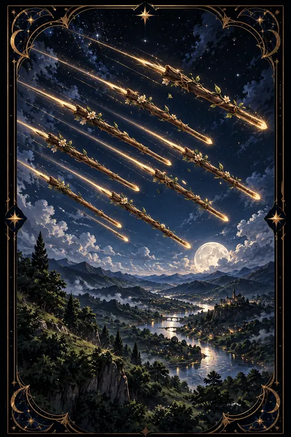

이 게시물은 쿠팡 파트너스 활동의 일환으로, 이에 따른 일정액의 수수료를 제공받습니다.


완드 8 카드 — 빠른 진전과 반가운 소식
완드 8 카드 한눈에 보기
완드 8 카드 상징 읽기

동네보살의 카드 그림은 전통 라이더–웨이트 덱의 뜻을 새 그림으로 옮긴 것입니다. 아래 상징 설명은 전통 덱의 그림을 기준으로 합니다.
완드 8에는 사람도 동물도 없이 여덟 개의 나무 지팡이만 그려져 있습니다. 지팡이들은 맑은 하늘을 비스듬히 가로지르며 같은 방향으로 나란히 날아가는데 이는 막힘없이 진행되는 일과 빠른 속도를 뜻합니다.
지팡이 끝에 돋은 초록 잎은 이 움직임이 살아 있는 성장의 기운이라는 점을 보여 줍니다. 억지로 밀어붙이는 힘이 아니라 때가 되어 저절로 뻗어 가는 흐름입니다.
아래쪽에 펼쳐진 푸른 골짜기와 강은 장애물이 없는 넓은 길을 상징합니다. 강물이 흐르듯 소식과 사람이 오가고 멀리 언덕 위에 보이는 집은 지팡이들이 결국 닿게 될 목적지를 가리킵니다. 지팡이가 땅을 향해 내려오는 각도는 날아오른 일이 곧 결과로 착지한다는 뜻으로 읽힙니다. 인물이 등장하지 않는 드문 카드라는 점도 눈여겨볼 만합니다. 사람의 의지보다 상황 자체가 먼저 움직이는 시기라는 뜻으로 읽을 수 있습니다.
완드 8 카드 정방향 뜻
정방향 완드 8은 오래 멈춰 있던 일이 한꺼번에 움직이기 시작한다는 신호입니다. 기다리던 연락이 오고 미뤄지던 결정이 내려지며 계획이 눈에 보이는 속도로 진행됩니다.
이 카드는 소식과 전달의 카드이기도 합니다. 메일, 전화, 문자처럼 말이 오가는 통로가 활발해지므로 보낼 것이 있다면 지금 보내는 편이 좋습니다. 여행이나 출장, 이사처럼 몸이 움직이는 일에도 순조로운 흐름이 실립니다.
다만 이런 속도는 오래 머물지 않습니다. 준비된 일부터 바로 실행하고 결정할 일은 미루지 않는 것이 이 카드를 가장 잘 쓰는 방법입니다. 흐름이 빠를수록 중요한 약속과 날짜는 한 번 더 확인해 두면 좋습니다. 오래 준비해 온 일이라면 지금이 결과를 확인할 수 있는 시점입니다. 한동안 연락이 끊겼던 사람에게서 소식이 올 가능성도 높습니다.
완드 8 카드 역방향 뜻
역방향 완드 8은 날아가던 지팡이가 방향을 잃은 모습입니다. 기다리던 답이 늦어지거나 일정이 연달아 미뤄져 답답함이 커질 수 있습니다. 보낸 말이 잘못 전해지거나 중요한 소식이 중간에서 누락되는 일도 생기기 쉽습니다.
반대로 조급함이 문제일 때도 있습니다. 확인 없이 서둘러 결정하거나 한꺼번에 여러 곳에 손을 뻗으면 힘이 흩어지고 되돌아가는 수고가 생깁니다. 연애에서는 질투나 넘겨짚기가 관계를 흔드는 원인이 됩니다.
이럴 때는 속도를 한 단계 늦추는 것이 오히려 빠른 길입니다. 오간 내용을 글로 남기고 밀린 일정은 새 날짜를 정해 적어 두세요. 흩어졌던 흐름은 방향이 정리되는 순간 다시 빠르게 움직이기 시작합니다. 기다림이 길어질 때는 그 시간에 할 수 있는 다른 준비를 챙겨 두면 마음이 한결 편해집니다.
연애에서 완드 8 카드
솔로라면 인연이 빠르게 다가오는 시기입니다. 처음 만난 자리에서 대화가 잘 통하거나 연락이 금세 이어지며 짧은 시간 안에 가까워질 수 있습니다. 호감이 느껴진다면 답장을 일부러 늦추기보다 자연스러운 속도로 반응하는 편이 좋습니다.
사귀는 사람이 있다면 둘 사이에 산뜻한 바람이 부는 때입니다. 함께 떠나는 여행이나 새 계획이 두 사람을 한 방향으로 모아 줍니다. 멀리 떨어져 지내는 커플이라면 만날 날이 앞당겨지는 반가운 소식이 올 수도 있습니다.
다만 감정이 빨리 달아오를수록 서로의 속도를 확인하는 대화가 필요합니다. 상대가 따라올 수 있는 걸음으로 마음을 전하면 설렘이 오래갑니다. 연락 빈도나 답장 속도로 마음을 재기보다 만났을 때 나누는 대화에 집중하면 관계가 더 단단해집니다.
재회·속마음 질문에서 완드 8 카드
다시 만남을 묻는 자리에 완드 8이 놓이면 멈춰 있던 연락이 갑자기 오갈 가능성이 큽니다. 한동안 소식이 없던 상대에게서 짧은 메시지가 오거나 우연한 계기로 대화가 다시 열릴 수 있습니다. 이런 흐름은 빠르게 왔다가 빠르게 지나가므로 기회가 오면 망설이지 말고 담백하게 응답해 보세요. 다만 오래 쌓인 감정을 한꺼번에 쏟아 내면 상대는 뒷걸음질 칠 수 있습니다. 가벼운 안부로 문을 열고 만남의 속도는 서로 맞춰 가면 됩니다. 카드가 뒤집혀 나왔다면 연락이 엇갈리거나 답이 더디게 올 수 있으니 재촉하는 메시지는 삼가는 편이 낫습니다. 기다리는 동안 자신의 일상을 활기차게 꾸려 가는 모습이 오히려 상대의 관심을 끌어당깁니다.
일·금전에서 완드 8 카드
일에서는 멈췄던 프로젝트가 속도를 내고 결재나 답변이 빠르게 돌아오는 흐름입니다. 출장, 외근, 이직처럼 자리를 옮기는 일에도 좋은 기운이 실립니다. 쌓인 메일과 연락을 그날그날 처리하면 흐름을 놓치지 않습니다.
돈의 흐름으로 보면 미뤄졌던 대금이나 정산이 들어오는 등 막혔던 돈길이 트이는 시기입니다. 다만 들어오는 속도만큼 나가는 속도도 빨라질 수 있으니 큰 지출은 하루쯤 두고 결정하는 편이 안전합니다. 계약서와 일정표는 서둘러 넘기지 말고 날짜와 숫자를 한 번 더 확인해 두세요. 이동이 잦아지는 만큼 일정표를 한곳에 모아 관리하면 겹치는 약속을 막을 수 있습니다. 답이 빨리 오는 시기이니 제안서나 지원서를 미뤄 두지 마세요.
완드 8 카드는 예일까 아니오일까
막혀 있던 일이 빠르게 풀리고 소식이 도착하는 카드이므로 예에 가깝습니다. 뒤집혀 나오면 결과는 오되 늦어지거나 중간에 엇갈릴 수 있어 조건부로 봅니다.
자주 묻는 질문
완드 8 카드 역방향은 나쁜 뜻인가요?
역방향 완드 8은 날아가던 지팡이가 방향을 잃은 모습입니다. 기다리던 답이 늦어지거나 일정이 연달아 미뤄져 답답함이 커질 수 있습니다. 보낸 말이 잘못 전해지거나 중요한 소식이 중간에서 누락되는 일도 생기기 쉽습니다.
완드 8 카드가 연애 질문에 나오면요?
솔로라면 인연이 빠르게 다가오는 시기입니다. 처음 만난 자리에서 대화가 잘 통하거나 연락이 금세 이어지며 짧은 시간 안에 가까워질 수 있습니다. 호감이 느껴진다면 답장을 일부러 늦추기보다 자연스러운 속도로 반응하는 편이 좋습니다.
타로 카드는 어떻게 뽑나요?
타로 카드 페이지에서 78장을 섞으면 그중 22장이 펼쳐집니다. 마음이 가는 세 장을 고르면 과거·현재·미래 자리에 놓이고, 한 장씩 뒤집어 자리와 방향에 맞는 풀이를 읽습니다. 정방향과 역방향은 섞는 순간 정해집니다.